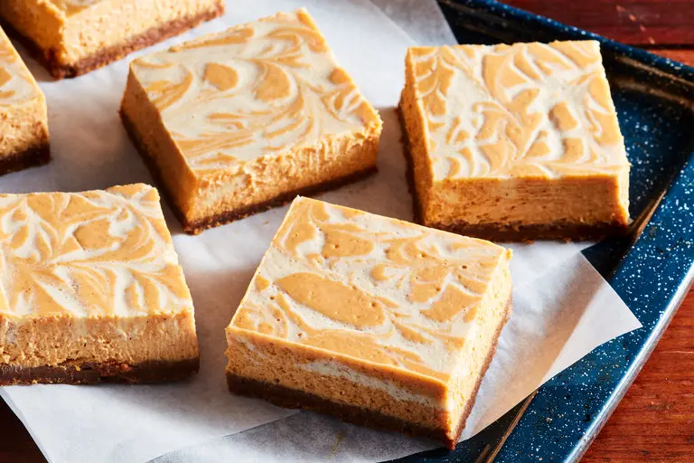

Pumpkin Cheesecake Bars

Description
They have the perfect balance of savory pumpkin and tangy cheesecake.
All the creamy texture of a fancy bakery cheesecake without the springform pan, the water bath, or any complicated steps!
Ingredients
- Pumpkin: This recipe uses pumpkin puree—the only ingredient should be pumpkin. Avoid pumpkin pie filling for this recipe.
- Cream Cheese: Use a block of full-fat cream cheese, don’t use spreadable cream cheese as it won’t firm up as well. Light cream cheese can be used, but the bars will be slightly softer.
- Topping: If time is short, use whipped topping or a can of whipped cream. This decadent dessert can get dressed up with tasty toppings like caramel sauce, a crunchy sprinkle of toasted pecans, a pumpkin spice granola, or a streusel topping.
Steps
- Make crust: Combine the crust ingredients right in the pan to save a bowl if you’d like! Simply stir and press.
- Prep filling: Ensure the ingredients are room temperature (including the eggs) for the smoothest filling.
- Bake and cool: Spread the cheesecake filling over the crust and bake. Cool completely before cutting.